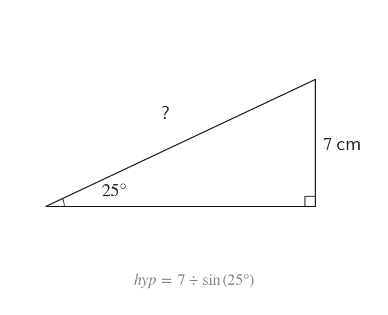

Why the unknown-on-the-bottom case takes two algebra steps
An unknown on the bottom takes two steps instead of one. Multiply both sides by it, then divide by the ratio, giving .
In , if the hypotenuse is unknown, it is sitting on the denominator of the fraction, not the numerator. To isolate it: first multiply both sides by hyp, giving ; then divide both sides by giving . The two steps are always the same for this case - multiply by the unknown, then divide by the ratio - so the working can be written straight to once you recognise the pattern. The same applies to cos: .